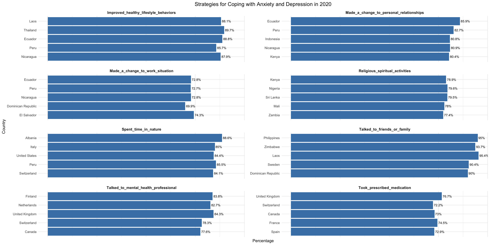

How did individuals manage anxiety and depression in 2020?
Research Question
Exploring the prevalence of depression by age, this study aims to analyze and understand the most three commonly used methods by individuals worldwide to cope with anxiety and depression in 2020. For each coping strategy, the aim is to uncover the top five countries that relied on it the most.
Data Description
Our World in Data is an online platform that provides accessible and comprehensive data on global development issues. The following datasets are used from the platform for analysis:
- The dataset covers the mental health sections of the Wellcome Global Monitor Survey 2020 conducted in 113 countries and territories worldwide on mental health views and experiences. The full questionnaire of the survey can be found here.
- The dataset consists of survey type data. It was last updated on April 19, 2023.
- Detailed description of the variables is provided in metadata and readme files.
- Source: Wellcome Global Monitor (2021) – processed by Our World in Data
- License: Creative Commons Attribution 4.0 International License (CC BY 4.0), this license allows users to share and adapt for any purpose, even commercially, as long as appropriate credit is given, a link to the license is provided, and any changes made are indicated.
Data Privacy and Ethical Considerations
- Based on the Deon’s Data Science Checklist the following parameters, _Informed consent, Collection bias, Limit PII exposure, Data security, Missing perspectives and Dataset bias in terms of Data Collection, Data Storage and Analysis respectively are considered and addressed appropriately.
- The share is obtained weighting the answers based on the characteristics of the participant. Data weighting is used to minimize bias in survey estimates and is intended to be used to generate nationally representative estimates within a country.
- Data for answers where the demographic group had less than 100 participants are filtered out.
- Empty answers have been filtered out. Empty answers may appear because the question was not applicable to the respondent or the respondent did not answer the question.
Data limitations
- The dataset includes data for the year 2020 only, which restricts us from performing comparative analysis and understand what coping mechanisms dominated before and after COVID 19.
- Analyzing just one years data is insufficient to understand if the trends in usage of various coping methods remained consistent across the years or if there existed any variations.
- An age variable, wherein the preference of coping mechanism categorized by age groups would have been more useful to conduct a detailed analysis.
- The dataset gives insight into the share of population with depressive disorders. This is estimated as the total number of cases with depressive disorders relative to the population of a country for various age groups.
- The dataset consists of both survey and experimental data considering the use of representative surveys and medical data . It was last updated on May 15, 2023.
- Detailed description of the variables is provided in metadata and readme files.
- Source: IHME, Global Burden of Disease (2020) – processed by Our World in Data
- License: Creative Commons Attribution 4.0 International License (CC BY 4.0), this license allows users to share and adapt for any purpose, even commercially, as long as appropriate credit is given, a link to the license is provided, and any changes made are indicated.
Data Privacy and Ethical Considerations
- Based on the Deon’s Data Science Checklist the following parameters, _Informed consent, Collection bias, Limit PII exposure, Data security, Missing perspectives and Dataset bias in terms of Data Collection, Data Storage and Analysis respectively are considered and addressed appropriately.
- Personally identifiable information (PII) is completely anonymized.
- Subjects have given informed consent and collection bias is taken care of. For instance, data is collected from both diagnosed and un-diagnosed individuals.
Data limitations
- There is a lag in the data records. Data is available only until 2019.
- A variable representing gender would have made the analysis more interesting and informative.
- Shares related to diagnosed and un-diagnosed cases should have been represented separately for better understanding.
Data Download Process
- Navigate to Our World in data website.
- Click on Browse by Topic and under Health, select Mental Health.
- Using the search bar, search for “How do people deal with anxiety or depression around the world? 2020”
- Click on the download button and select to download data in csv format.
- Repeat the previous two steps for downloading dataset 2. In the search bar, instead search for “Depressive disorders prevalence, by age, World, 2019”.
Motivation
In today’s world, given the fast-paced life, societal pressures and economic instability, mental health especially depression has been on the rise and is becoming a global challenge affecting individuals across all ages, backgrounds, and cultures. As of 2019, the share of population in the world , suffering from either diagnosed or un-diagnosed depression from different age groups can be observed below. There is a steady increase in percentage of individuals feeling depressed with increasing age.
Moreover, the COVID-19 has significantly highlighted the importance of mental health, amplifying feelings of isolation, anxiety, and uncertainty. Despite growing awareness, stigma surrounding mental illness persists, hindering individuals from seeking help and accessing adequate support. Addressing mental health and depression requires multifaceted approaches, encompassing de-stigmatization efforts, accessible and culturally sensitive mental health services, and holistic strategies that prioritize prevention, early intervention, and community support.
The blog aims to provide a comprehensive overview of global prevalence of depression and coping strategies being used. It serves as a valuable resource for anyone looking to understand the prevalence of depression among various age groups and the various ways it is being managed globally. By showcasing different coping methods being used around the world, it encourages a more inclusive and empathetic approach to mental health care, ultimately fostering a more supportive and understanding global community.
Benefits Of Analysing How Individuals Managed Anxiety and Depression In 2020
In ordinary circumstances, dealing with mental health conditions is already challenging. However, the additional restrictions and the distressing environment brought about by the COVID-19 pandemic have undoubtedly exacerbated these difficulties. Prolonged periods of isolation have intensified symptoms, making it even more arduous for individuals to cope. In such times, it becomes imperative to understand which coping methods have been most effective for people. This understanding plays a vital role in advancing our comprehension of mental health, enhancing support systems, and nurturing resilience within communities. It would have a direct impact on the following:
Improving Mental Health Interventions: Provide insights into effective coping strategies which can be used to tailor interventions that better support individuals in managing their mental health.
Enhancing Treatment Approaches: Refine treatment approaches to better address the specific needs based on their coping mechanisms.
Enhancing Self-Awareness and Resilience: Individuals themselves can benefit from understanding various coping strategies used by others and enhance theirs.
Advancing Research: Research into how individuals manage anxiety and depression contributes to the broader understanding of mental health leading to development of new therapeutic interventions.
Data
The data used for analysis can be found on Our World In Data, an online platform that provides accessible and comprehensive data on global development issues. The two datasets can be searched for as follows:
“How do people deal with anxiety or depression around the world? 2020”
“Depressive disorders prevalence, by age, World, 2019”
For more detailed information of the datasets, refer to the data code-book and readme file.
Analysis
Top Three Coping Methods
While coping with anxiety and depression varies greatly among individuals, influenced by factors such as their environment, ethnicity, and available resources, certain coping methods enjoy widespread popularity worldwide. Understanding these universally favored coping mechanisms can shed light on effective strategies for managing mental health challenges across diverse populations. So, what are the top 3 coping methods preferred by the individuals around the world?
| Methods | Share of Use in Percentage |
|---|---|
| Talked_to_friends_or_family | 79.53809 |
| Spent_time_in_nature | 72.01470 |
| Improved_healthy_lifestyle_behaviors | 70.84874 |
| Made_a_change_to_personal_relationships | 60.42453 |
| Made_a_change_to_work_situation | 49.71871 |
| Took_prescribed_medication | 49.11862 |
| Talked_to_mental_health_professional | 44.11910 |
| Religious_spiritual_activities | 42.88649 |
Among, the eight methods listed above we can conclude that three most used methods to cope with anxiety and depression were:
Talked_to_friends_or_family: With 79.5% of individuals reporting this as a coping method, it underscores the crucial role of social support in managing mental health. Emotional connections and conversations with loved ones provide significant comfort and reduce feelings of isolation.
Spending Time in Nature: At 72.01%, this method highlights the therapeutic benefits of the natural environment. Time spent outdoors is linked to reduced stress levels and improved mood, indicating the importance of incorporating nature into mental health strategies.
Improving Healthy Lifestyle Behaviors: With 70.85% of individuals adopting this approach, it emphasizes the impact of healthy habits, such as regular exercise, balanced nutrition, and adequate sleep, on mental well-being. These behaviors contribute to overall physical health, which is closely connected to mental health.
For Each Coping Strategy, What Were The Top 5 Countries They Were Most Popular In

From the above figure, we can observe that the coping methods of individuals in different countries varied widely, highlighting that there is no one-size-fits-all approach. This underscores the importance of analyzing diverse strategies to spread awareness of the various methods available and to understand which methods are best suited for different demographics. Such analysis is crucial for developing targeted interventions that cater to individuals’ specific needs based on their demographic, ethnic, and socio-economic backgrounds.
For example, in countries like Ecuador, Peru, and Nicaragua, individuals tend to prefer coping methods such as improving healthy lifestyle behaviors, making changes to personal relationships, and altering work situations. These strategies reflect a focus on personal and social adjustments to manage mental health.
In contrast, developed countries like the United Kingdom, Switzerland, and Canada show a preference for seeking professional help through methods such as taking prescribed medication and talking to mental health professionals. This trend indicates a reliance on medical and professional support systems available in these nations.
Interestingly, the United States, Italy, and Albania show a tendency towards spending time in nature as a preferred coping method. This suggests a recognition of the therapeutic benefits of natural environments in managing stress and enhancing mental well-being.
On the other hand, lower-middle-income countries such as Kenya, Nigeria, and Sri Lanka predominantly engage in religious or spiritual activities as their main coping mechanism. This highlights the cultural and spiritual dimensions of mental health management in these regions.
Finally, talking to friends or family is a common coping strategy in countries like the Philippines, Zimbabwe, and Laos, emphasizing the importance of social support and community connections in these societies.
Conclusions
In conclusion, these findings suggest that effective coping strategies for anxiety and depression often involve a combination of social interaction, engagement with nature, and the adoption of healthy lifestyle practices. These methods collectively contribute to enhancing resilience and promoting mental well-being.
It highlights the importance of both professional and non-professional support systems. It shows that while some individuals in developed countries may prefer seeking help from mental health professionals and taking prescribed medication, others in lower-middle-income countries might find solace in religious or spiritual activities. Understanding diverse preferences of coping methods is essential for tailoring mental health interventions to different populations. It also provides valuable insights for researchers aiming to develop more specific and culturally appropriate strategies to support individuals across various demographics and backgrounds.
What Makes the Blog Interesting to Me
The blog post is particularly interesting to me as it illuminates and spreads awareness about the importance of mental health. It not only discusses the prevalence of depression but also highlights the diverse methods being used around the world to cope with it. This approach captures the essence of the problem while providing a practical guide for people to explore various strategies.
One of the most compelling aspects of the post is the way it illustrates how coping methods vary based on demographics, background, and ethnicity. This variation emphasizes the necessity of understanding mental health within different cultural and socio-economic contexts. It demonstrates that while there are numerous ways to manage depression, effective coping often begins with personal-level changes, such as adjusting behaviors, spending time in nature, and reaching out to friends and family.
References
- Thibaut, F. (2020). “Anxiety and depression in the context of COVID-19.” International Journal of Psychiatry in Clinical Practice, 24(3), 229-231. DOI: 10.1080/13651501.2020.1760227
- Charlson, F., van Ommeren, M., Flaxman, A., Cornett, J., Whiteford, H., & Saxena, S. (2019).”New WHO prevalence estimates of mental disorders in conflict settings: a systematic review and meta-analysis.” The Lancet, 394(10194), 240-248. DOI: 10.1016/S0140-6736(19)30934-1
- Thibaut, F. (2020). “Anxiety and depression in the context of COVID-19.” International Journal of Psychiatry in Clinical Practice, 24(3), 229-231. DOI: 10.1080/13651501.2020.1760227 4.Park, C. L., Russell, B. S., Fendrich, M., Finkelstein-Fox, L., Hutchison, M., & Becker, J. (2020). “Americans’ COVID-19 stress, coping, and adherence to CDC guidelines.” Journal of General Internal Medicine, 35(8), 2296-2303. DOI: 10.1007/s11606-020-05898-9
- Wellcome Global Monitor (2021) – processed by Our World in Data. “How do people deal with anxiety or depression around the world? 2020”. Wellcome Global Monitor (2021) [original data].
- IHME, Global Burden of Disease (2020) – processed by Our World in Data. “Depressive disorders prevalence, by age, World”. IHME, Global Burden of Disease (2020) [original data].
Tell us about a part(s) of your data processing or analysis that weren’t “sexy” and wouldn’t typically be included in a blog post.
- One of the most exhausting aspects of data processing was cleaning the dataset. Manually renaming all the variables, as they were poorly formatted in the raw data, was not only uninteresting but also repetitive and time-consuming. Ensuring accurate and meaningful variable names was crucial for clarity and ease of analysis.
- The datasets were relatively small, with a limited number of variables. This simplicity made the analysis straightforward and efficient. Additionally, there were almost no missing values, except for one instance, which ensured consistent data without any interruptions or need for extensive imputation methods.
- I would certainly omit the data cleaning and analysis code from the blog post. Instead, the blog would focus on the key insights and findings derived from the analysis, making it more engaging for readers. By highlighting the results and their implications, the blog can effectively communicate the value of the analysis without delving into the technical details of data preparation.
Were there any challenges that you faced in conducting this analysis. These may take the form of data limitations or coding challenges?
- Conducting the analysis posed no significant challenges; however, the limited availability of data for just one year in the comparison dataset “dealing-with-anxiety-depression” severely constrained the scope of the analysis. While I managed to draw key conclusions, the absence of data spanning pre- and post-COVID periods hindered the ability to analyze any temporal trends or changes over time. Further, not having individual gender and age group variables, limited the analysis to a broader perspective.
- Creating the plots proved to be time-consuming, as achieving the right aesthetics and formatting to present the data in a clear and organized manner required considerable effort. -Initially, I did not anticipate substantial variations in the utilization of different coping methods for anxiety and depression across various countries. I had hoped to group the coping method variables for common countries. However, due to the unexpected diversity in coping strategies, I had to resort to using “facet_wrap” to represent each variable separately.
Tell us about any imperfect parts of your work or how would like to expand this analysis in future?
- I aim to conduct a more comprehensive analysis by incorporating variables indicating age groups and gender and their utilization of various coping methods. This expanded dataset would enable a deeper understanding of which coping strategies are most effective for different age and gender demographics across diverse countries.
- Furthermore, I plan to enhance the analysis by delving into the prevalence of depression and the corresponding utilization of coping methods within each individual country. By examining these factors on a country-specific level, I aim to uncover nuanced insights into the interplay between mental health trends and coping behaviors within distinct socio-cultural contexts.
- Additionally, I intend to explore the potential influence of a country’s GDP on the prevalence of depression and the variation in coping method usage. By analyzing these relationships, I seek to discern whether economic factors significantly impact mental health outcomes and coping strategies. This investigation could shed light on the socio-economic determinants of mental health and inform targeted interventions aimed at mitigating disparities.